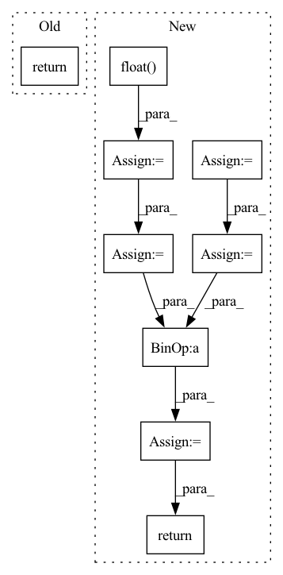

Pattern ID :18984
Before Change
def __call__(self, input):
if self.is_test:
return input
return input
After Change
input_shape_tmp = input.shape
random_matrix = torch.rand(input_shape_tmp, device=input.device)
one_zero_m = (random_matrix < p).float()
mask_flag = torch.nn.functional.max_pool2d(one_zero_m, (self.block_size, self.block_size), stride=1, padding=1)
mask = 1.0 - mask_flag
elem_numel = input_shape[0] * input_shape[1] * input_shape[2] * input_shape[3]
elem_numel_m = float(elem_numel)
elem_sum = mask.sum()
output = input * mask * elem_numel_m / elem_sum
return output
In pattern: SUPERPATTERN
Frequency: 3
Non-data size: 9
Instances Fragment ID: 61780655
Project Name: miemie2013/pytorch-ppyolo
Commit Name: bc4be5379c94fb5941da6b37cfe68d41c28cadb9
Time: 2020-10-20
Author: 53960695+miemie2013@users.noreply.github.com
File Name: model/head.py
M Class Name: DropBlock
N Class Name: DropBlock
M Method Name: __call__(2)
N Method Name: __call__(2)
M Parent Class: torch.nn.Module
N Parent Class: torch.nn.Module
M File Name: model/head.py
N File Name: model/head.py
M Start Line: 190
M End Line: 190
N Start Line: 209
N End Line: 226
Before Change
Returns
filtered (torch.tensor (shape=(batch, time)))
return nanfilter(signals, win_length, nanmean)
def median(signals, win_length):
After Change
// Apply the mask by setting masked elements to zero, or make NaNs zero
mask = ~torch.isnan(signals)
masked_x = torch.where(mask, signals, torch.zeros_like(signals))
// Create a ones kernel with the same number of channels as the input tensor
ones_kernel = torch.ones(signals.size(1), 1, win_length, device=signals.device)
// Perform sum pooling
sum_pooled = F.conv1d(
masked_x,
ones_kernel,
stride=1,
padding=win_length // 2,
)
// Count the non-masked (valid) elements in each pooling window
valid_count = F.conv1d(
mask.float() ,
ones_kernel,
stride=1,
padding=win_length // 2,
)
valid_count = valid_count.clamp(min=1) // Avoid division by zero
// Perform masked average pooling
avg_pooled = sum_pooled / valid_count
// Fill zero values with NaNs
avg_pooled[avg_pooled == 0] = float("nan")
return avg_pooled.squeeze(1)
def median(signals, win_length):
Fragment ID: 61780751
Project Name: maxrmorrison/torchcrepe
Commit Name: 443aa38be220020b2b4b5c5ab1f558c797e6ff12
Time: 2023-04-07
Author: lengyue@lengyue.me
File Name: torchcrepe/filter.py
M Class Name: AnonimousClass
N Class Name: AnonimousClass
M Method Name: mean(2)
N Method Name: mean(2)
M Parent Class:
N Parent Class:
M File Name: torchcrepe/filter.py
N File Name: torchcrepe/filter.py
M Start Line: 22
M End Line: 22
N Start Line: 23
N End Line: 56
Before Change
return predictions
def masked_mse_loss(self, input, target, mask, background_mask):
return (background_mask * (mask * (input - target) ** 2)).mean()
def general_step(self, batch, batch_idx, mode):
After Change
def masked_mse_loss(self, input, target, mask, background_mask):
//return (background_mask * (input - target) ** 2).mean()
input = torch.randn(2, 100, 3)
target = torch.randn(2, 100, 3)
mask = (input > 0).float()
background_mask = torch.randn(2, 100, 1)
value = background_mask * (input - target) ** 2
mask_sum = torch.sum(mask, dim=1)
mask_sum_modified = torch.clamp(mask_sum, min=1.0)
loss = torch.sum(value * mask) / mask_sum_modified
return loss
// TODO -> do not take into account -1 flow information (or filter them in WaymoDataset?)
def compute_metrics(self, y, y_hat, mask, labels, background_weight): Fragment ID: 61780781
Project Name: jabb0/fastflow3d
Commit Name: bea207737f9d35e204c73ecfcde3de582a10956d
Time: 2021-06-28
Author: carlosmn1997@gmail.com
File Name: models/FastFlow3DModelScatter.py
M Class Name: FastFlow3DModelScatter
N Class Name: FastFlow3DModelScatter
M Method Name: masked_mse_loss(5)
N Method Name: masked_mse_loss(5)
M Parent Class: pl.LightningModule
N Parent Class: pl.LightningModule
M File Name: models/FastFlow3DModelScatter.py
N File Name: models/FastFlow3DModelScatter.py
M Start Line: 118
M End Line: 118
N Start Line: 120
N End Line: 128